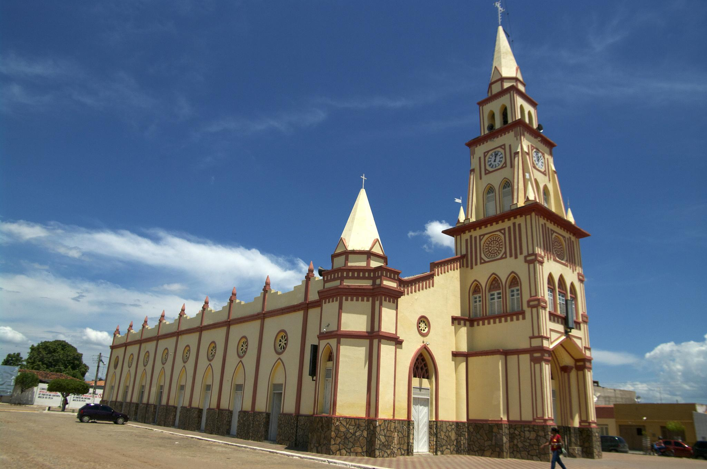
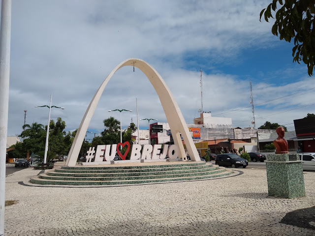

Informações técnicas sobre relevo, população, IDH etc.
| INFORMAÇÕES | |
|---|---|
| Municípios limítrofes | Nova Olinda, Milagres e Abaiara |
| Fundação | 26 de agosto de 1862 |
| Área total | 661,959 km² |
| Clima | Semiárido (Bsh) |
| IDH | 0,647 — médio |
| PIB | R$ 239 566,00 mil |
| INFORMAÇÕES TERRITORIAIS | |
|---|---|
| Número de habitantes | 49 477 habitantes |
| Superfície de Brejo Santo |
66 342 hectares
663,42 km² (256,15 sq mi) |
| Densidade populacional | 74,6 ha./km² |
| Altitude de Brejo Santo | 380 metros de altitude |
| Coordenadas geográficas decimais |
Latitude:
-7.48689
Longitude: -38.9798 |
| Coordenadas geográficas sexagesimais | Latitude: 7° 29' 13'' Sul , Longitude: 38° 58' 47'' Oeste |
| INFORMAÇÕES DO MUNICÍPIO | |
|---|---|
| Endereço da Prefeitura Municipal de Brejo Santo |
Brejo Santo
Prefeitura de Brejo Santo
Rua Manoel Inacio Bezerra,192 BREJO SANTO - CE, 63260-000 Brasil Work +55 (88) 3531-1042 Fax +55 (88) 3531-1177 |
| Telefone da prefeitura |
(88) 3531-1042
Internacional: +55 88 3531-1042 |
| Fax |
(88) 3531-1177
Internacional: +55 88 3531-1177 |
| Endereço electrónicoda prefeitura |
A carregar...
|
| Site oficial do município | brejosanto.ce.gov.br |
| INFORMAÇÕES DO ADMINISTRATIVAS | ||
|---|---|---|
| Prefeito de Brejo Santo | MARIA GISLAINE SANTANA SAMPAIO LANDIM | |
| Partido politico | PDT | |
| INFORMAÇÕES DE TRANSPORTE | |
|---|---|
| Transporte urbano disponível | |
| Aeroporto |
Aeroporto Regional do Cariri
43.8 km
Aeroporto de Paulo Afonso
227.7 km
Aeroporto de Petrolina
272.2 km
|
| INFORMAÇÕES DE DISTÂNCIA A OUTRAS CIDADES | ||
|---|---|---|
| São Paulo : 1966 km | Rio de Janeiro : 1775 km | Brasília : 1343 km |
| Salvador : 613 km | Fortaleza : 422 km mais perto | Belo Horizonte : 1474 km |
| Manaus : 2383 km | Curitiba : 2277 km | Recife : 456 km |
| Goiânia : 1515 km | Belém : 1252 km | Porto Alegre : 2817 km |
| Guarulhos : 1944 km | Campinas : 1922 km | São Luís : 808 km |
| Distância calculada em linha reta! | ||
Conheça mais sobre a história da Brejo Santo.
As terras localizadas no sopé da Chapada do Araripe, eram habitadas pelos índios
Kariri, antes da chegada das entradas no interior brasileiro durante o século XVII.
Os integrantes das entradas, militares e religiosos, mantiveram os primeiros contatos
com os nativos, estudaram toda a região dos cariris, catequizaram os indígenas e os
agruparam em aldeamentos ou missões. Os resultados destes contatos e
descobrimentos desencadearam notícias que na região tinha ouro em abundância e em
seguida desencadeou-se uma verdadeira corrida para os sertões brasileiros, onde
famílias oriundas de Portugal, sonhando com as riquezas de terras inexploradas e com
a esperança de encontrar o minério, que as levariam a aumentar o seu patrimônio
material, além de aumentar o seu prestigio pessoal com a corte portuguesa.
A busca do metal precioso, nas ribanceiras do rio Salgado, trouxe para a região do
Sertão do Cariri, a colonização e com consequência a doação de sesmarias, o que
permitiu o surgimento de lugarejos e vilas. O Brejo Santo como núcleo urbano surgiu
neste contexto, ao redor de uma fazenda.
No ano de 1858 existia, onde hoje se situa a cidade de Brejo Santo, duas casas: uma
propriedade do Coronel Aristides Cardoso dos Santos e uma pertencente a viúva de
Antonio José de Sousa, Senhorinha Pereira Lima, onde o tropeiro se abastecia de
farinha, arroz, fumo, bebida, descansava os animais e depois partia em rumo de Jardim.
Neste mesmo ano, chegou a Brejo Santo o Coronel Clementino Cavalcanti, José
Francisco da Silva, sua esposa Ana Maria Gomes da Silva e seus filhos. Pouco a
pouco, o povoado foi crescendo, surgindo novas casas, bodegas e com uma tendência
sempre ascendente de desenvolvimento, foi concedido os Foros do Distrito. Por
iniciativa de Basílio Gomes da Silva, filho de José Francisco da Silva, foi enviada uma
carta ao Dr. Antônio Luiz dos Santos solicitando a criação da freguesia de Brejo dos
Santos. Com a Lei Provincial número 1.708, de 25 de julho de 1876, criou-se a
paróquia, separando, assim, das paróquias de cidades vizinhas, entretanto, somente
em 02 de setembro de 1877 é que o Padre Francisco Lopes Abath chegou à cidade.
Com a frequente expansão populacional e comercial, Brejo dos Santos tornou-se vila
pelo decreto número 49, de 26 de agosto de 1890, de autoria do Governador do Estado,
Coronel Luiz Antônio Ferraz, criando, assim, a "Villa de Brejo dos Santos”. Finalmente,
a vila passou a cidade pelo Decreto-Lei Estadual número 448, de 20 de dezembro de
1938, com o topônimo simplificado de Brejo Santo.
A cidade de Brejo Santo somente tomou a configuração física dos dias atuais com a Lei
número 1.153, de 22 de Novembro de 1951, ficando, por conseguinte, assim
constituído: Brejo Santo (Sede do Município) São Felipe e Poço (Distritos), perdendo
com a referida lei o distrito de Porteiras, que passou a configuração de cidade.
Saiba mais sobre os melhores lugares e o que fazer em Brejo Santo.
Igreja Matriz do Sagrado Coração de Jesus
Praça Dionísio Rocha de Lucena

Cultura
Os principais eventos culturais são a festa do Sagrado Coração de Jesus, na última
semana do mês de julho e a vaquejada, realizada no final do mês de agosto, período
que concentra a semana do município e atrai pessoas de toda a região. O bloco
carnavalesco "O Cabeção" também é uma tradição de Brejo Santo. Outras atrações que
vem se tornando parte da cultura local são os festivais de rock: Rock in brejo e São
Rock, que tem atraído pessoas de cidades circunvizinhas.
Veja como chegar nos melhores pontos de Brejo Santo